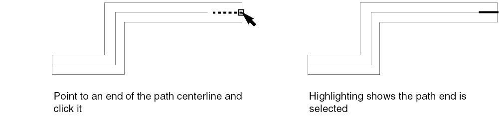

Selecting Path Components
You can select an entire path, path ends, or a path vertex.
Selecting a Whole Path
You can select a whole path in full and partial selection modes.
To select a path in full selection mode, do one of the following:
-
Point anywhere on the path and then click to select the path.
As you point, the whole path is highlighted with dotted lines.
-
Create a selection box around the whole path.
To select a path in partial selection mode, do one of the following:
-
Point to the outer edge of any segment of a path and then click to select the path.
As you point, the whole path is highlighted with dotted lines.

- Create a selection box around the whole path.
Selecting Path Ends
When you are in partial selection mode, you can select the end points of a path.
To select a path end in partial selection mode, do one of the following:
-
Point to an end of the path centerline and then click it.
As you point, the end of the centerline is highlighted with a dotted line.
 -
Create a selection box around the endpoint of the path.
Selecting a Path Vertex
A vertex is a point on the path centerline where two segments join.
To select a path vertex in partial selection mode, do one of the following:
-
Point to the vertex and click it.
As you point, the vertex is highlighted with a dotted line.
-
Create a selection box around the vertex.
Selecting a Single Path Segment
To select a single segment of a path in partial selection mode, do one of the following:
-
Point to the centerline in the middle of a segment and click it.
As you point, the centerline of the segment is highlighted with a dotted line.
-
Create a selection box around a segment. Make sure both end points of the segment centerline are inside the selection box.
Selection of Multiple Path Segments
To select more than one pathSeg, ensure that the Spine option in the Selection Options form is selected. All pathSegs connected to and of the same width as the first pathSeg clicked get selected. The selection behavior differs for full and partial selection modes. The following example illustrates this.
- In full selection mode, clicking anywhere on pathSegs 1, 2, 3, or 4 in the figure selects all pathSegs forming the spine. The width of the pathSegs 5 and 6 is different from pathSegs 1 and 4, where the click points A, B, and C lie. Therefore, pathSegs 5 and 6 are not selected.
- In partial selection mode, clicking at point A selects only pathSeg 1. Clicking at point B, which is at the outer edge of the pathSeg, selects all pathSegs forming the spine. Clicking at point C selects both pathSegs 3 and 4 because they are of the same width and have the same direction.
The following table summarizes the selection of pathSegs when click-points displayed in the figure are clicked in the full and partial selection modes.
If you area select a spine such that the area selection box does not enclose all the pathSegs of the spine, then neither the spine nor the pathSegs within the area selection box are selected. PathSegs within the area selection box are selected only if the partial selection mode is on. To prevent issues when the spine comprises a large number of pathSegs, you can configure the maxPathSegInSpineAreaSelection environment variable.
Related Topics
Return to top